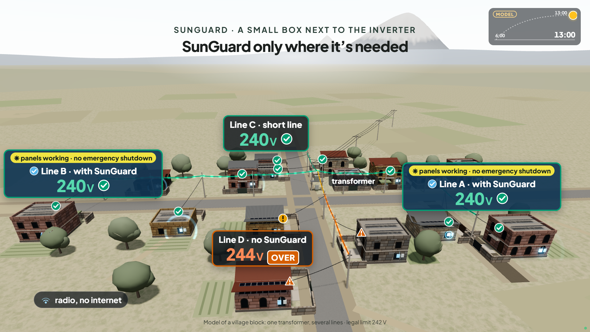
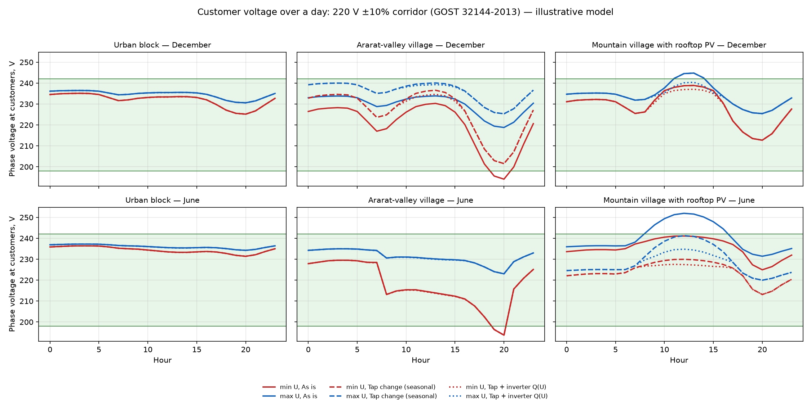
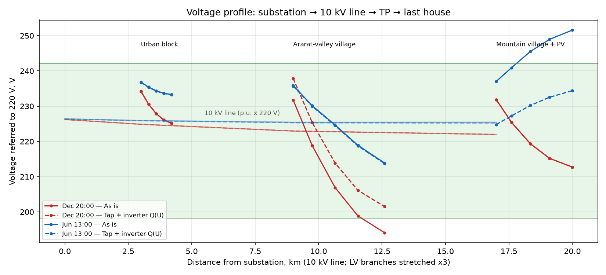

Team #27 Grino · GreenTech Academy Hackathon · Yerevan, 3–4 October 2026
Rooftop solar is pushing Armenian street voltage over the legal limit. The cheapest fixes already exist.
The long version of our three-minute pitch. The regulator's data, the physics, what other countries did, what we built in 24 hours, and what we still do not know.
Contents
In short
- Armenia has about 59,000 solar plants on the distribution grid, most of them on roofs [5]. Around noon they push power back into thin 0.4 kV lines, and the voltage at the far end of the street climbs above 242 V, the legal limit [6].
- The regulator's own monthly data show it. In June 2026, 5,594 feeders were above +10% in the 09–13 h block; on 2,614 of them this happens only around noon — not at night in June or in December — which points to rooftop solar [1].
- At least 149,000 customers got more than 242 V at least once in June, twice the December figure. People who work in the sector told us the real share is about one in three customers.
- In 2025 ENA received 3,913 claims for appliances damaged by poor power quality, a quarter of all complaints [2].
- The cheapest fixes are a transformer tap change and the voltage-control mode that inverters already have. On our model mountain-village line they keep every home within the limit without losing solar, and let the same wires take 2.7 times more of it; on a real line from the regulator's data the calculator gives 1.7 times.
- We designed SunGuard, a box next to the inverter that helps from the very first home: it keeps the inverter running instead of shutting down, and shows the voltage on the owner's phone over home Wi-Fi. Together, the boxes and the regulator's data map the problem lines, so ENA can apply the cheapest fix first. We ask for a pilot with 50 solar homes on three problem lines.
The pitch deck
The three-minute presentation is an interactive page: a 3D village where the sun rises, voltage climbs on the long lines, and SunGuard brings them back to green. It runs in any modern browser.

Solar grew from the roofs, not from a plan
Any customer in Armenia may install up to 150 kW of solar without a licence. Surplus fed into the grid is netted against consumption month by month, whatever the hour [8]. That rule made rooftop solar a good deal, and people took it: the number of net-metered plants grew from 784 in 2018 to 50,059 at the end of 2025, and 18,810 of them were added in 2025 alone [4].
Net-metered ("autonomous") solar producers at the end of each year. PSRC annual reports [4]; September 2026 is an approximate figure from ENA [5]. Hover or tap a bar for the value.
On average that is 0.56 kW of solar per customer. Averages hide the problem. Solar clusters on certain streets and villages, and a feeder with ten rooftop plants behaves nothing like the national mean.
Why the voltage rises at the end of the street
A street is usually one 0.4 kV line from a transformer, with houses hanging off it one after another. In the evening, power flows from the transformer to the houses and the voltage drops along the way. At noon on a sunny day the roofs produce more than the street uses, the flow reverses, and the voltage rises along the line instead. The last house sees the highest value.
The size of the rise is roughly ΔU ≈ (R·P + X·Q) / U: line resistance times exported power, plus reactance times reactive power. Longer and thinner lines and more solar mean a bigger rise. Inverters can pull the voltage back down through the second term by absorbing reactive power. That mode is called volt-var, and most inverters already have it, switched off.
Two different limits matter, and the gap between them explains a lot.
| Limit | Value | What happens |
|---|---|---|
| Legal supply quality | 220 V ± 10% = 198–242 V | Above 242 V the neighbours' supply is out of spec. Appliances suffer. GOST 32144-2013, in force in Armenia since 2015 [6]. |
| Inverter protection | 10-minute mean above 253 V | The inverter switches itself off and the owner loses output. Default setting of EN 50549-1 [7]. |
Between 242 and 253 V the neighbours are already outside the legal band, but the solar owner loses nothing. This is why the main benefit of fixing the problem goes to the street and to ENA, not to the plant owner. We come back to this when we discuss who pays.
The regulator's data already show the problem
Every month the Public Services Regulatory Commission (PSRC) publishes a large spreadsheet of voltage deviations at customers, broken down by ENA branch, settlement, transformer and feeder, in four time blocks per day [1]. The figures are ENA's own calculations. We processed four months, December 2025 and April to June 2026, 823,519 data rows in total.
The time of day tells the story. In December the worst block is the evening, when everyone cooks and heats. From April on, the midday block takes over. In June, 5,594 feeders were above +10% between 9:00 and 13:00.
Feeders where voltage at customers exceeded 242 V (+10%) in each time block of the month. The highlighted bar is midday. PSRC database [1], our count.
Three kinds of problem feeder
A single month cannot say why a feeder is high. Comparing seasons can. We used three simple rules, meant as hypotheses for an engineer to check, not as a diagnosis.
- Solar-type, 2,614 feeders. Above +10% at midday in June, but not at night in June or in December. Midday-only over-voltage is the signature of reverse flow from roofs. (With December nights alone as the control, 4,696 feeders qualify; 2,082 of them are also high on June nights, so their tap or 10 kV setting is part of the story and we leave them out.)
- Tap-type, 1,770 feeders. Above +10% at night in December, when there is no sun. The transformer tap or the 6–10 kV voltage is set too high.
- Overload-type, 743 feeders. Below −10% on December evenings. A long or overloaded line or transformer.
Problem feeders by type and marz. Solar-type and tap-type exclude each other by construction; overload-type can overlap. PSRC database [1], our classification.
Yerevan has the most feeders simply because it has the most customers. Per 10,000 customers, Shirak (ENA's Kars branch) leads with 350 noon-only feeders, ahead of Yerevan and Armavir. That makes Kars our first choice for a pilot.
How many people
The database also counts "customers who received poor-quality electricity". Taken strictly, at least 149,000 customers, 15% of the roughly 980,000 listed, got more than 242 V at least once in June 2026, against 7% in December. Every fourth customer lives on a feeder that went above 242 V at some point between April and June.
We treat 15% as a floor, not the full picture. The data are ENA's calculation, with four time blocks per day and no measurements published. People who work in the sector told us during the hackathon that about one in three customers experience over-voltage. We cannot document that figure, so we report it as their estimate.
We corrected ourselves during the night. Our first script took the customer count from only one of the two row groups that the database keeps per feeder (customers at 0.4 kV and at 0.2 kV). That shrank the denominator and inflated the documented share. The method is in Methods; the corrected script is in the zip.
Complaints
PSRC's quarterly reports on complaints to ENA have a column for "repair or compensation of appliances due to low power quality". In 2025 it held 3,913 complaints, a quarter of all, and another 2,086 in the first half of 2026 [2]. The category covers all quality problems, not only solar. In March 2026 PSRC itself wrote about growing quality complaints on 0.4/0.22 kV networks with rooftop plants and frequent disconnections caused by voltage swings [11].
Why nobody has fixed it yet
None of the reasons is a mystery, and none of them needs new physics.
- No rules for inverters. Armenia's grid codes set no technical requirements for renewable plants [9]. Inverters run on factory settings: full power until they trip at 253 V.
- No view of the feeder. ENA knows contracts, not how much solar actually sits on each feeder and phase. The open data have no phases and no band above +10%.
- Taps are changed after the damage. Our mentor from the sector told us that off-load taps are usually adjusted after complaints, and nobody forecasts voltage on solar feeders.
- No price signal. Monthly netting makes the grid a free battery, and the night tariff is only 10 AMD/kWh below the day tariff [27]. Owners have no reason to limit noon export.
- Thin management. A branch engineer needs a short list of actions, not another dashboard.
Other countries already act, and the pattern is the same
| Where | What they did | Lesson for Armenia |
|---|---|---|
| China | From 2026, new distributed PV must be "observable, measurable, adjustable, controllable" (NEA 2025 No. 7) [14]. Before that, more than 300 counties had simply stopped new connections [15]. | Blanket stops are the failure mode. Make visibility and control a condition of connection instead. |
| Tai'an, China | State Grid Shandong diagnosed 7,619 transformer areas from meter voltages with seven simple rules, then fixed most of them with 3,872 tap changes and crew work orders; only 580 needed construction [13]. | Diagnose from data you already have; the tap comes first, construction last. This is the logic of our problem-line map. |
| Germany | About 400,000 PV systems had to be retrofitted after the "50.2 Hz problem", for €65–175 million [16]. LV inverters must provide reactive power for voltage support under VDE-AR-N 4105, and since 2025 new plants without a smart meter and control box are capped at 60% feed-in [17]. German planning practice NOVA: optimise before reinforcing before building [28]. | Get inverter settings right at connection. Retrofits are slow and expensive. |
| Australia | AS/NZS 4777.2:2020 made volt-var and volt-watt modes mandatory for new inverters [18]. | Mandatory inverter modes work without new hardware. |
All of them do three things: see where the solar is and what the voltage does, set inverters properly, and limit export only where needed instead of everywhere. Armenia does none of the three yet.
In Tai'an one example says it all: a transformer area with 182.81 kW of rooftop PV reached 252 V. Four inverters absorbed reactive power, the tap moved one step down, and output was trimmed in 2% steps. Voltage compliance went from 69.6% to 100% [13].
What we propose: one box per home, and a map of the problem lines
Safe voltage at home, panels that keep working, and more solar on the same wires.
SunGuard, a box next to the inverter
SunGuard is designed to sit next to a home inverter and help on its own, from the very first home. It measures the voltage every second, switches on and checks the inverter's own voltage-control mode (volt-var), and when the voltage keeps rising it eases the inverter's power down just enough to stay below the inverter's protective shutdown at 253 V, instead of shutting down. Without it, an inverter at the end of a long line can shut down at noon, restart a minute later and shut down again; the owner loses output and the neighbours see voltage swings. The box does not change inverter firmware, and every power limit it sets has a revert timer, so if the box fails the inverter returns to its own certified settings. Holding the legal 242 V for the whole street is ENA's job; the box makes it visible and cheap: the boxes' data show where a transformer should be adjusted.
The box connects to the home Wi-Fi, as most inverters already do. The owner sees the voltage on the phone, gets an alert when it leaves the legal band, and keeps a log that can be shown to ENA with a damage claim. When several homes on a street have boxes, the cloud sees the whole street and shares the reduction fairly, so the last house does not carry everyone.
| Part | Role | Price, AMD |
|---|---|---|
| ESP32-WROOM-32UE | microcontroller with Wi-Fi | 2,750 |
| MAX485 module | link to the inverter (RS485 / Modbus) | 610 |
| ZMPT101B | voltage sensor | 1,010 |
| HLK-5M05 | 230 V to 5 V supply | 3,100 |
| DIN-rail case, terminals, fuse, varistor | enclosure and protection | ~3,200 |
| Total | ≈ 11,000 (≈ $30) |
Retail prices at chipdip.am on 3 October 2026 [23]. Excludes assembly, installation and certification.
We first designed the boxes to talk to each other by radio. We dropped that for two reasons. A single box must work on its own, without neighbours, and the popular LoRa band at 868 MHz sits inside 862–880 MHz, which Armenia's frequency table reserves for government use [19]. Wi-Fi at 2.4 GHz up to 100 mW needs no permit [20]; frequency licences are issued by PSRC [21], and LoRa 868 modules are not on the Eurasian list of radio devices importable without documents [22].
A map of problem lines, and the cheapest fix first
From the regulator's open data we already found 2,614 lines with noon-only over-voltage. For each line a calculator built during the hackathon tests the cheap measures first: change the transformer tap, switch on volt-var in the inverters, and only then rebuild the line. It runs in a browser, in English, Armenian and Russian, and includes 400 real problem lines. Open the calculator. As more homes install boxes, the map is built from measured voltages instead of ENA's calculations; that map is what ENA would buy later. The diagnosis is rule-based; machine learning only makes sense once real measurements are in.
Where a tap change and one-time inverter settings are enough, no box is needed at all. The box is for homes that need their panels to keep working, for streets where the settings must be verified, and for streets where the line leaves no choice but trimming.
What the model says
We built an illustrative network in pandapower [25]: a 110/10 kV substation, a 17 km 10 kV line and three settlements, an urban block, an Ararat-valley village with irrigation pumps and a mountain village with 48 kWp of rooftop solar on a 1 km aluminium line. It is not a model of a real ENA feeder; it reproduces the patterns in the PSRC data so that measures can be compared.

On a clear June day the last house in the mountain village reaches 252 V. Three ways to fix it:
| Measure | Highest voltage | Solar lost |
|---|---|---|
| Nothing | 252 V | 0%, but neighbours above 242 V for 9 hours |
| Trim all solar equally, nothing else | ≤ 242 V | 32% of the day's solar |
| Tap one step down plus inverter volt-var | ≤ 242 V | 0% |
The order matters. Trimming alone keeps the limit but throws away a third of the energy. The tap plus volt-var keeps it for free. That is why the cheap fixes come first and SunGuard trims only what is left.
Hosting capacity: how much rooftop solar the feeder takes before anyone exceeds 242 V at 13:00 in June. Model. In the Ararat-valley village the tap cannot be lowered, because evening voltage already falls below 198 V; only volt-var applies there.
One more result surprised us. Volt-var works through the line's reactance, so it helps a lot on bare overhead wires and much less on aerial bundled cable (SIP) and underground cable, which have low reactance. On a village feeder, volt-var raised hosting capacity from 43 to 98 kWp on bare AC-95 wire, but only from 32 to 37 kWp on SIP 4×70. New and rebuilt rural lines are increasingly SIP, so on those streets SunGuard will have to trim more often.
What we do not know
- How often voltage reaches 253 V. The data stop at "above +10%". Without inverter logs we cannot count trips, so we do not claim savings for solar owners.
- How good the data are. The PSRC figures are ENA's calculations; the method is not published, and no independent measurements exist.
- Real feeders. Lengths, conductors and solar per feeder are not public. Our calculator uses labelled averages until ENA's data are in.
- Inverters in the field. SunGuard has not yet talked to a real inverter. Modbus maps differ by brand.
- Some international facts come from secondary sources; we mark them in the source list.
Risks we see, and what we do about them
| Risk | Response |
|---|---|
| The owner loses nothing between 242 and 253 V, so why buy a box? | The first buyers are homes at the end of long lines, where inverters do reach the emergency shutdown and appliances are at risk. How often that happens is the first thing the pilot measures. Installers can bundle the box with new plants. |
| An installer could just set volt-var once | That is exactly our first recommendation. The box is for homes and streets that need verification, protection or data. |
| A lower tap can break the winter evening | Every option is checked over 24 hours and both seasons; seasonal taps are reversed before winter; a 7-day check after each change, as in Tai'an. |
| Warranty, liability, cyber-security | Only modes the inverter already has, no firmware changes, fallback to certified settings, encrypted connection to the cloud, agreement with ENA and PSRC before field use. |
| Data and consent | Plant data go to ENA only with the owner's consent; aggregate reporting by default. |
Who buys it, and the economics of one box
The first customers are families with rooftop solar at the end of long lines: their inverters shut down at noon and their appliances are at risk. The second are solar installers, who build about 19,000 new plants a year [4] and get the angry calls when inverters trip; the box makes their offer better. ENA comes later, when the boxes have mapped the problem streets.
| Item | Value | Basis |
|---|---|---|
| Parts, Wi-Fi version | ≈ $30 (11,000 AMD) | chipdip.am, 3 Oct 2026 [23] |
| Assembly, testing, certification | ≈ $12 | assumption |
| Price to the home, incl. VAT | $79 | assumption |
| Margin after VAT | ≈ 36% | from the rows above |
| Solar plants today / new in 2025 | ~59,000 / 18,810 | ENA [5]; PSRC [4] |
| Year 1: 5% of today's plants | ≈ 3,000 boxes ≈ $0.24 M | assumption |
| By year 3, cumulative: 20% of today's plants + 10% of new ones | ≈ 16,000 boxes ≈ $1.3 M | assumption |
| Whole Armenia | ≈ $4.7 M once + ≈ $1–1.5 M a year | 59,000 and 13,000–19,000 new a year × $79 |
Alternatives today: the installer can switch on volt-var once — that is our own first advice, and where it is enough no box is needed; the inverter's own app shows one inverter, usually after it has tripped; a plain voltage relay protects appliances but neither controls the inverter nor records anything. Armenian installers already work in Georgia and Uzbekistan [12], which gives the product a channel abroad.
Ideas we looked at and dropped
- Home batteries. Under monthly netting a family has little to shift, and the night tariff is only 10 AMD cheaper. A 10 kWh battery pays back in 20–40 years.
- A sensor in every substation. Tens of thousands of devices. Better to compute from existing data and measure only where numbers disagree.
- Automatic load switching between feeders. Ties between 0.4 kV feeders are rare and switching belongs to ENA's protection domain.
- A phase balancer as the product. The problem is real and automatic phase-swapping devices exist [24], but the open data have no phases and crews fix imbalance with a work order. We kept it as a demo stand.
- Selling noon surplus. Already legal under netting; more noon export loads the grid more, and daytime curtailment of guaranteed-purchase plants already costs 3.35 bn AMD in the 2026 tariff [10].
- Dynamic household tariffs. Needs regulation, and industry participants at the workshop saw it as ineffective here.
- LoRa at 868 MHz. Government band in Armenia.
Pilot and ask
Three months in the GreenTech Academy incubator (15 October 2026 to 22 January 2027) [26]:
- Month 1. Two installers and 50 solar homes on three problem lines in one ENA branch (Kars or Gegham). Inverter event logs from those homes, to learn how often 253 V is reached; agreement with ENA on meter data for the same lines.
- Month 2. SunGuard prototypes in the 50 homes, volt-var settings checked on every inverter, the cheapest fixes proposed to ENA for the three lines (tap changes during planned outages).
- Month 3. Before and after on the same meters: customer-hours outside 198–242 V, days from problem to fix, evening minimum after tap changes, kW of solar accepted without construction.
Our ask: 50 solar homes on three problem lines for a pilot, two solar installers, and ENA's meter data for those lines.
How this was made
We started from public sources, including the PSRC files, as the hackathon rules allow [26]. Everything shown in the pitch — the analysis scripts, the network model, the calculator, the SunGuard design and bill of materials, the radio-law check, the presentation and this page — was built during the hackathon. Code and data: github.com/vitasha10/grino-smart-grid.
We used Claude (Anthropic) for research, code and drafting. Every number here was checked against its source file or recomputed. We corrected three of our own figures during the event: the customer share described above, an early owner-payback estimate that assumed losses above 242 V instead of 253 V, and a loss figure our mentor showed us was wrong.
This page contains only aggregate figures and infrastructure codes — no names or addresses.
Methods, for engineers
Processing the PSRC voltage database
Four monthly files (December 2025, April–June 2026) from the PSRC service-quality page [1], 37,324–39,448 feeders each. A feeder is the pair (transformer code, feeder code). About 10,000–11,000 feeders per month appear in two row groups, one for customers supplied at 0.4 kV and one at 0.2 kV, each with its own customer count; in June these sum to 949,781 and 30,392 customers.
For each (feeder, group) we take the maximum of "customers who received poor-quality electricity" over all time blocks and all bands on one side (above +10%, or below −10%), and sum over groups and feeders. The maximum, not the sum, avoids counting the same people in several blocks, so the result is a lower bound for unique customers. The denominator is the sum of all groups' customer counts: 980,173–1,016,574 per month, 86–90% of ENA's 1,135,537 customers [3].
| Month | Customers listed | > 242 V | % | < 198 V | % | Feeders > 242 V |
|---|---|---|---|---|---|---|
| Dec 2025 | 1,016,574 | 71,214 | 7.0 | 27,542 | 2.7 | 3,764 |
| Apr 2026 | 980,460 | 136,067 | 13.9 | 31,872 | 3.3 | 6,025 |
| May 2026 | 980,704 | 140,435 | 14.3 | 15,432 | 1.6 | 6,889 |
| Jun 2026 | 980,173 | 148,822 | 15.2 | 28,830 | 2.9 | 6,972 |
Feeder typology
Tap-type: above +10% in the 01–08 h block in December 2025. Solar-type: above +10% in the 09–13 h block in June 2026 and not tap-type. Overload-type: below −10% in the 19–24 h block in December 2025. Of the 743 overload-type feeders, 415 transformers have low voltage on only some feeders (a line problem). Only five feeders were both above +10% and below −10% in the same block, which would hint at phase imbalance; the data have no phases.
Network model
pandapower 3.5.5, Newton–Raphson. 110 kV source; 110/10 kV 16 MVA transformer; 10 kV overhead line 3 + 6 + 8 km. Urban block: 0.63 MVA transformer, AL 95 line 0.4 km, 80 customers on the feeder plus 300 lumped. Ararat-valley village: 0.25 MVA, AL 50 1.2 km, 60 + 100 customers, 16 kWp PV, 12 kW irrigation pumps at the line end in summer. Mountain village: 0.25 MVA, AL 50 1.0 km, 40 + 60 customers, 48 kWp PV, more towards the end. Consumption 281 kWh per customer per month in December and 174 in June (medians of the PSRC data), residential hourly shapes, clear-day solar peaks 0.82 kW/kWp in June and 0.55 in December. Seasonal tap ±2.5% per step; volt-var: absorb reactive power at cos φ 0.9 where voltage exceeds 1.05 p.u. Limits 0.90–1.10 p.u. of 220 V on hourly values (GOST uses 10-minute values).

Calculator physics and check
One 0.4 kV feeder split into five equal sections, load and PV spread evenly, other feeders of the transformer lumped at its bus. Standard 10/0.4 kV transformer data. Backward/forward sweep, up to 40 iterations to 10⁻⁷ p.u. Ten options per feeder (five tap positions × volt-var off/on), ranked by cost and then by hours outside limits. The same feeder built in pandapower agreed within 0.1 V in four test cases. Real feeders are loaded with the customer count from the database and labelled averages for everything the open data lack.
Conductors
| Line (1 km, 40 households, 48 kWp, June) | Max V | Hours outside | Hosting, kWp | with volt-var |
|---|---|---|---|---|
| AC-50 bare | 249 | 8 | 29 | 41 |
| SIP 4×70 | 247 | 7 | 32 | 37 |
| SIP 4×95 | 244 | 6 | 38 | 47 |
| AC-95 bare | 243 | 4 | 43 | 98 |
| SIP 4×120 | 243 | 3 | 44 | 58 |
| Cable Al 4×150 | 242 | 0 | 51 | 70 |
| Cable Al 4×240 | 240 | 0 | 73 | 133 |
Calculator engine, 3 October 2026. 83% of ENA's 17,280 km of 0.4 kV lines are overhead [3]; the split by conductor type is not published.
Sources
- PSRC. Calculated indicators of voltage deviation beyond permissible limits at consumers, Appendix 3 to decision 441-Ա (16.11.2022); monthly files Dec 2025, Apr–Jun 2026. psrc.am, service quality indicators.
- PSRC. Quarterly reports on consumer complaints to ENA, 2025 Q1–Q4 and 2026 Q1–Q2 (columns: quality, appliance repair/compensation, total). Same PSRC page.
- PSRC. Service-quality indicators 2025: interruptions summary Q4 2025 (1,135,537 customers) and reliability summary 2025 (9,975 TPs; 14,386.7 km overhead + 2,893.6 km cable 0.4 kV lines). Same PSRC page.
- PSRC. Annual reports 2024 and 2025 (autonomous producers 31,249 and 50,059 / 640.1 MW). Annual report 2025 (PDF).
- Armenpress, 3 September 2026: ENA on about 59,000 solar plants and ~1,288 MW on its grid. armenpress.am/en/article/1259636.
- GOST 32144-2013, Power quality limits in public power supply systems, clause 4.2.2; in force in Armenia since 1 June 2015 (Armstandard catalogue).
- EN 50549-1:2019, Requirements for generating plants connected to LV distribution networks; default interface protection as reproduced in inverter type-test reports. The standard is paywalled; not checked against the primary text.
- Law of the Republic of Armenia "On Energy", consolidated 24.10.2025, articles 56.1–56.3. arlis.am/hy/acts/216338.
- ADB / World Bank. Legal assessment of wind power project viability in Armenia, June 2024, p. 5. PDF.
- PSRC. Electricity tariffs 2026, review for 01.02.2026–31.01.2027 (forced curtailment of guaranteed-purchase plants: 168.29 million kWh, 3.35 bn AMD).
- PSRC. Analysis of renewable-energy development, March 2026, p. 36.
- eclareon / BSW-Solar. ENABLING PV in Armenia, November 2024, pp. 17, 21, 22. PDF.
- National Energy Administration of China. Compilation of typical cases of power-quality management in the power industry, November 2025, case "Shandong Tai'an", pp. 55–62.
- National Energy Administration of China. Administrative Measures for Distributed PV (NEA 2025 No. 7) and official Q&A, nea.gov.cn. Secondary summary; not archived.
- Reports on hosting-capacity "red zones" in Chinese counties: gdshe.org/article/22578.html; people.com.cn, 22.01.2024. Secondary.
- DNV. The German 50.2 Hz problem. dnv.com.
- SMA. Solarspitzengesetz 2025 explainer. sma.de/solarspitzengesetz2025.
- Standards Australia. AS/NZS 4777.2:2020, Grid connection of energy systems via inverters, Part 2. Secondary summary.
- Order 71-Ն (28.02.2008), Table of allocation of radio-frequency bands of the Republic of Armenia, version from 09.05.2026: sect. 3.6 item 1; sect. 4.2 items 20, 24, 27. arlis.am/hy/acts/224835.
- PSRC decision 169-Ն (13.04.2011), version from 06.12.2024, p. 3(1), p. 4(8)–(9). arlis.am/hy/acts/200563.
- Law ՀՕ-176-Ն on electronic communication, arts. 4, 5, 17. arlis.am/hy/acts/209934.
- Eurasian Economic Commission decision 30 (21.04.2015), section 2.16, Annex 2. alta.ru.
- ChipDip Armenia, chipdip.am, prices on 3 October 2026.
- Bao G., Ke S. Load transfer device for solving a three-phase unbalance problem under a low-voltage distribution network. Energies 12 (2019) 2842.
- Thurner L. et al. pandapower: an open-source Python tool for convenient modeling, analysis, and optimization of electric power systems. IEEE Trans. Power Systems 33 (2018) 6510–6521.
- GreenTech Academy. Hackathon rules and incubation programme. greentechacademy.am.
- ENA residential tariffs, unchanged for 2026: 46.48 / 48.48 / 53.48 AMD/kWh by day, 10 AMD less at night.
- VDE|FNN. Information sheet on controllable local transformers, July 2016 (NOVA principle: grid optimisation before reinforcement before expansion). PDF.
Team #27 Grino · GreenTech Academy Hackathon · Yerevan, October 2026 · Static page, no tracking · Back to top